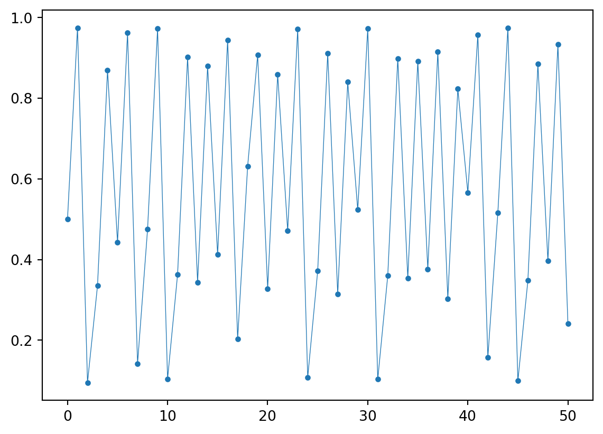

import matplotlib.pyplot as plt
import numpy as np
f = lambda y,alpha: alpha*y*(1-y)
N = 31
y = np.zeros(N)
y0 = 0.2
for alpha in [0.3,0.5,0.9]:
y[0] = y0
for i in range(N-1):
y[i+1] = f(y[i],alpha)
plt.plot(y,'.-',
linewidth=0.5,
label=f'$\\alpha = {alpha}$')
plt.legend()Lab 04: Chaos
Food chain
The standard prey-predator system only considers 2 species. In reality, many species interact and compete for survival. Ecological systems are typically very much interconnected. More species means more variables and parameters, thus more complexity.
To better appreciate the jump in complexity, we analyze here a simple system of 3 species: plant (\(X\)), herbivore (\(Y\)), and carnivores (\(Z\)).
The model reads as follows (see Hastings and Powell (1991)): \[ \left\{\begin{aligned} X' &= X\Bigl( r(1-X/K) - \frac{a_1 Y}{1+b_1 X} \Bigr), & \\ Y' &= Y\Bigl( -d_1 + \frac{c_1 a_1 X}{1+b_1 X} - \frac{a_2 Z}{1+b_2 Y} \Bigr), & \\ Z' &= Z\Bigl( -d_2 + \frac{c_2 a_2 Y}{1+b_2 Y} \Bigr). & \\ \end{aligned}\right. \]
We implement the model in a Matlab function FoodChain that can take \(b_1\) as free parameter.
function dy = FoodChain(~,y,b1)
% parameters
r=1; K=1; c1=1; c2=1;
a1=5; a2=0.1; b2=2; d1=0.4; d2=0.01;
% default for b1
if (nargin < 3), b1 = 2.0; end
% rhs
X = y(1);
Y = y(2);
Z = y(3);
dX = r*X.*(1-X/K)-a1*X./(1+b1*X).*Y;
dY = c1*a1*X./(1+b1*X).*Y-d1*Y-a2*Y./(1+b2*Y).*Z;
dZ = c2*a2*Y./(1+b2*Y).*Z-d2*Z;
dy = [dX;dY;dZ];
endThe parameters are set as follows:
| Parameter | Value |
|---|---|
| \(r\) | \(1\) |
| \(K\) | \(1\) |
| \(a_1\) | \(5\) |
| \(a_2\) | \(0.1\) |
| \(b_1\) | \(2.0 \div 3.0\) |
| \(b_2\) | \(2\) |
| \(c_1\) | \(1\) |
| \(c_2\) | \(1\) |
| \(d_1\) | \(0.4\) |
| \(d_2\) | \(0.01\) |
Simulate the model with
ode45for \(b_1=2\), initial conditions \(X(0)=Y(0)=Z(0)=1\), and for a final time \(T=1000\). Plot the solution both as a time series and in a phase portrait. Does the system converge towards a limit cycle? Hint: try to extend the final time.To use
ode45, please do as follows:y0 = [1,1,1]; % initial condition TT = 1000.0; % we define a function with fixed b1 f = @(t,y) FoodChain(t,y,2.0); opts = odeset('AbsTol',1e-10,'RelTol',1e-8); [T,Y] = ode45(f,[0,TT],y0,opts); disp(Y(end,:)); fig=figure; plot(T,Y,'LineWidth',1.0); title('Time series'); legend('X','Y','Z'); grid on; fig=figure; plot3(Y(:,1),Y(:,2),Y(:,3)); title('Phase portrait'); grid on; xlabel('X'); ylabel('Y'); zlabel('Z');
Solution
Note that the variable \(Z(t)\) is still increasing over time. We cannot conclude that we have reached an equilibrium, although it looks like a limit cycle. We continue the integration until \(T=10^4\) and:
We see that an equilibrium \(E^* \approx (0.7499, 0.1250, 13.7500)\) has been reached.
- Now simulate the system with \(b_1=2.2\). Do you observe a limit cycle? Report the amplitude of the oscillations for each species.
Solution
We reuse the code above with \(b_1 = 2.2\). The solution looks like the following.
There is indeed a limit cycle. To report the amplitude and period, we continue the integration from the last point observed.

The amplitude we approximate by taking the difference between max and min. For the period, we find the peaks in the error function when we shift the function.
f = @(t,y) FoodChain(t,y,2.2);
% we integrate for some long time
[~,Y] = ode45(f,[0,1e5],y0,opts);
% then we integrate again for some time on the LC
[T,Y] = ode45(f,[0,300],Y(end,:),opts);
% amplitude
A = max(Y) - min(Y);
% period
[~,locs] = findpeaks(sum((Y - Y(1,:)).^2,2));
P = T(locs(2))-T(locs(1));The amplitude and period are respectively [0.1458, 0.0629, 0.4428] and 57.8563.
Visualize the Poincaré map (see A.7.4 Poincaré maps) for the limit cycle. For constructing it, consider a plane orthogonal to the coordinate \(Z\) and placed so that passes through the midpoint of the cycle. Hopefully, the limit cycle will intersect it at some point. MATLAB ODE integrator offers a way to estimate “events”. Events are conditions computed along the trajectory that, once met, are returned by the integrator. For us, the condition is “check if the trajectory intersects the Poincaré plane”. If this happens, the integrator will record the position and time of the event.
Using the
ode45function (but it works also for other integrators), we need to define an event function as follows:function [position,isterminal,direction] = PoincareMap(~,y,c,n) % C is center of the plane % N is normal to the plane % when the orthogonal projection is zero, we are on the plane position = dot(y(:)-c(:),n); isterminal = 0; % do not halt integration at the event direction = -1; % only intersection in direction n endUse this code to visualize the Poincaré map. Try to estimate the period.
b1 = 2.2; f = @(t,y) FoodChain(t,y,b1); y0 = [1,1,1]; % we integrate for some long time opts = odeset('AbsTol',1e-10,'RelTol',1e-8); [~,Y] = ode45(f,[0,1e5],y0,opts); % the last point should be on the LC yc = Y(end,:); % we integrate more to get the LC [T,Y] = ode45(f,[0,1e3],yc,opts); % the Poincare' map is a plane orthogonal to nn % and centered in pc nn = [0;0;1]; pc = trapz(T,Y,1) / T(end); % we can use the nullspace to get tangent vectors V = null(nn'); % this function is called every time 'position' is % zero in the right 'direction' % we measure the distance from the plane event_fun = @(t,y) PoincareMap(t,y,pc,nn); opts_event = odeset(opts,'Events',event_fun); % integration with events % YP is the solution; te,ye are the events [~,YP,te,ye,~] = ode45(f,[0,1e3],yc,opts_event); fig = figure; plot3(YP(:,1),YP(:,2),YP(:,3),'LineWidth',2.0); hold on; grid on; plot3(ye(:,1),ye(:,2),ye(:,3),'r.','MarkerSize',16); title(sprintf('Phase portrait (b_1 = %g)',b1)); xlabel('X'); ylabel('Y'); zlabel('Z'); % plot the Poincare plane rr = 0.25; pp = [pc'+rr*V,pc'-rr*V]; p = patch(pp(1,:),pp(2,:),pp(3,:),'r'); p.FaceAlpha = 0.4; % in-picture visualization of the Poincaré plot ye_proj = (ye-pc) - ((ye-pc) * nn) * nn'; axes('Position',[.6 .6 .3 .3],'XTickLabel',[],... 'YTickLabel',[],'nextplot', 'add'); plot(ye_proj(:,1),ye_proj(:,2),'r.',... ye_proj(end,1),ye_proj(end,2),'b+','MarkerSize',16); xlim([-rr,rr]); ylim([-rr,rr]); grid on; box on; title('Poincare'' map');
Solution
To estimate the period, we can simply use te: the difference between two events is the period. Here, we have a period of 57.7923.
(Optional) A limit cycle is stable if, when perturbed, attracts the orbits. Test this in the Poincaré map, by perturbing the equilibrium within the plane, with a perturbation of \(\varepsilon = 10^{-2}\):
% ye is a point of the LC on the plane y0_new = ye(end,:) + 1e-1*(V * (2*rand(2,1)-1))';Adapt the previous code to see the effect of the perturbation.
Solution
A possible code is the following:
b1 = 2.2;
f = @(t,y) FoodChain(t,y,b1);
y0_new = ye(end,:) + 1e-1*(V * (2*rand(2,1)-1))';
event_fun = @(t,y) PoincareMap(t,y,pc,nn);
opts_event = odeset(opts,'Events',event_fun);
[~,YP,~,ye,~] = ode45(f,[0,1e5],y0_new,opts_event);
fig = figure;
plot3(YP(:,1),YP(:,2),YP(:,3),'LineWidth',2.0);
hold on; grid on;
plot3(ye(:,1),ye(:,2),ye(:,3),'r.','MarkerSize',16);
title(sprintf('Phase portrait (b_1 = %g)',b1));
xlabel('X'); ylabel('Y'); zlabel('Z');
% plot the Poincare plane
rr = 0.25;
pp = [pc'+rr*V,pc'-rr*V];
p = patch(pp(1,:),pp(2,:),pp(3,:),'r');
p.FaceAlpha = 0.4;
% in-picture visualization of the Poincaré plot
ye_proj = (ye-pc) - ((ye-pc) * nn) * nn';
axes('Position',[.6 .6 .3 .3],'XTickLabel',[],...
'YTickLabel',[],'nextplot', 'add');
plot(ye_proj(:,1),ye_proj(:,2),'r.',...
ye_proj(end,1),ye_proj(end,2),'b+','MarkerSize',16);
xlim([-rr,rr]); ylim([-rr,rr]);
grid on; box on;
title('Poincare'' map');The equilibrium on the Poincaré map is asymptotically stable, hence the limit cycle is asymptotically stable as well.
- Slightly increase the value of \(b_1\). Try with \(b_1=2.3\), \(b_1=2.39\), \(b_1=2.392\). What do you observe?
Solution
We \(b_1 = 2.3\) we have this:
We observe a so-called period-doubling bifurcation. The limit cycle splits and the period doubles. It is easier to understand the dynamics on the Poincaré map. Here the stable equilibrium (corresponding to the limit cycle) undergoes a bifurcation for some value of \(b_1\in[2.2,2.3]\). The equilibrium becomes unstable and a stable \(2\)-cycle appears. The \(2\)-cycle on the Poincaré map corresponds to a limit cycle that requires two turns to return to the original point. We observed the same phenomenon in the discrete logistic equation.
If we increase again \(b_1\), there is a new period-doubling bifurcation for \(b_1\in[2.3,2.39]\). Now on the Poincaré map we have a \(4\)-cycle.
A further increase of \(b_1\) yields yet another period-doubling bifurcation for \(b_1\in[2.39,2.392]\), corresponding to an appearance of a \(8\)-cycle on the Poincaré map.
The previous results closely reproduce the cascade of cycle formation in the discrete logistic equation. We expect new bifurcations with \(16\)-, \(32\)-, \(2^n\)-cycle formation. Please note that all the cycles are still present, but they are unstable.
Q1.9. Keep increasing \(b_1\) up to \(b_1=3\). A strange attractor should have appeared. Visualize it in the phase portrait and as a time series. Provide some biological insights.
We reuse the code above, with \(b_1 = 3.0\).
Note that the overall behavior looks almost periodic. However, we notice that every cycle is slighly different from the previous one. The dynamics is confined on a invariant set (the attractor).
(Optional) One key feature of chaotic systems is the sensitivity to initial conditions. One measure of sensitivity is the Lyapunov characteristic exponent. Given two initial conditions \(\mathbf{y}_0\) and \(\tilde{\mathbf{y}}_0 = \mathbf{y}_0 + \varepsilon \mathbf{z}\), we visualize the distance between the trajectories over time: \[ d(t) = \| \tilde{\mathbf{y}}(t) - \mathbf{y}(t)\| \approx e^{L t}d(0). \]
We call \(L\) the Lyapunov exponent. Try to visualize \(d(t)\) in the case of an equilibrium (\(b_1=2\)), a limit cycle (\(b_1=2.2\)), or a strange attractor (\(b_1=3\)). Use the
semilogycommand for visualizing the distance.The Lyapunov exponent gives a measure stretching of the initial data. In this system there are 3 exponents: the dominant one we have estimated above (not exactly, but we got an idea about it). The others show up only with a careful selection of \(\mathbf{y}_0\). In general we have:
Attractor \(L_1\) \(L_2\) \(L_3\) Equilibrium \({}-{}\) \({}-{}\) \({}-{}\) Cycle \(0\) \({}-{}\) \({}-{}\) Torus \(0\) \(0\) \({}-{}\) Strange attractor \({}+{}\) \(0\) \({}-{}\) Discuss the results. (There is no torus in this system.)
Solution
We adapt the code above:
b1 = 3.0;
f = @(t,y) FoodChain(t,y,b1);
y0 = [1,1,1];
% we integrate for some long time
opts = odeset('AbsTol',1e-10,'RelTol',1e-8);
[~,Y] = ode45(f,[0,1e5],y0,opts);
yc = Y(end,:);
% we integrate more to get the attractor
[T1,Y1] = ode45(f,0:2e3,yc,opts);
% we perturb around the attractor
y0tilde = yc + 1e-3*rand(size(Y(end,:)));
[T2,Y2] = ode45(f,0:2e3,y0tilde,opts);
f1 = figure;
plot(T1,Y1(:,3),'LineWidth',1.0); hold on;
set(gca,'ColorOrderIndex',1);
plot(T2,Y2(:,3),'--','LineWidth',1.0);
title('Time series');
legend('Z orig','Z perturb'); grid on;
f2 = figure;
semilogy(T1,vecnorm(Y1-Y2,2,2),'LineWidth',1.0);
title('Error');
grid on;From the time series (only for the variable \(Z\), the others are similar) we observe a sensitivity to initial data. A small initial perturbation is magnified, even though we are on the attractor. This is a characteristic of strange attractors, and makes the model unpredictible for long time.
We can also check the error in the log map, which should give us an indication of the Lyapunov exponent.
Of course the error is bounded from above because the attractor itself is bounded.
A positive dominant Lyapunov exponent means that the strange attractor is “stretching apart” orbits. Take several points as initial conditions by perturbing a single point from the strange attractor, similarly as done before. Plot the cloud of points in the phase portrait for various time instants, to highlight the mixing phenomenon.
The code samples
1000points, then shows their position along with the attractor over time.b1 = 3.0; f = @(t,y) FoodChain(t,y,b1); y0 = [1,1,1]; % we integrate for some long time opts = odeset('AbsTol',1e-10,'RelTol',1e-8); [~,Y] = ode45(f,[0,1e5],y0,opts); yc = Y(end,:); % we integrate more to get the attractor [T,Y] = ode45(f,[0,1e4],yc,opts); % plot the attractor f1 = figure; ll = plot3(Y(:,1),Y(:,2),Y(:,3)); ll.Color = [0 0.4470 0.7410 0.2]; grid on; hold on; title(sprintf('Phase portrait (b_1 = %g)',b1)) % we take a cloud of points around the initial condition Np = 1000; % number of points ep = 1e-3; % perturbation y00 = yc + ep*randn(Np,3); [T,Y] = ode45(f,0:1:4e3,y00',opts); % vectorized version Ysol = shiftdim(reshape(Y,[],3,Np),1); pp = plot3(Ysol(1,:,1),Ysol(2,:,1),Ysol(3,:,1),'.',... 'MarkerSize',16.0,'Color',[1,0,0,0.2]); pause; for tt=1:length(T) pp.XData = Ysol(1,:,tt); pp.YData = Ysol(2,:,tt); pp.ZData = Ysol(3,:,tt); pause(0.01); end hold off;
Solution

We observe that the cloud of points is compact at the beginning, but then it is spread apart by the flow of the system. There is a mixing effect, due to stretching and compression.
Transition to chaos
A prototypical example of a chaotic system is the discrete logistic map: \[ y^{(k+1)} = f(y^{(k)}) = \alpha y^{(k)}(1-y^{(k)}), \]
for some \(\alpha>0\). Note that this a discrete in time equation, there is no time derivative! Still, it is a dynamical system, and we can discuss equilibria, cycles, and chaos. Surprisingly, the dynamic can be very complex even in dimension 1, whereas for ODEs we need at least 3 dimensions for chaos. The reason is that orbits in the discrete case can intersect and jump one over the other one.
- Set \(\alpha \in [0,1)\). Compute the trajectory of the system for \(k\ge 1\) with \(y^{(0)} \in [0,1]\). Orbits should converge toward the fixed point \(y^* = 0\). Note that fixed points (or equilibria) satisfy the equation \[ y^* = \alpha y^* (1-y^*). \]
Solution
The trajectories tend to zero for various values of \(\alpha\). We can study the stability of the fixed point via contraction theorem: if \(f(y)\) is a contraction in a neighborhood of \(y^*\), then it is locally attractive. Since the function is smooth, we can check its derivative: \[ |f'(y^*)| < 1. \]
Here, \(f'(y^*)=f'(0)=\alpha\), so \(y^*\) is attractive when \(\alpha < 1\).
N = 40;
y0 = 0.2;
y = zeros(1,N);
y(1) = y0;
for a = [0.3,0.5,0.9]
for i=1:N-1
y(i+1) = a*y(i)*(1-y(i));
end
plot(0:N-1,y,'*-','LineWidth',2.0);
hold on;
end
grid on;
legend('a=0.3','a=0.5','a=0.9');- Try with \(\alpha\in(1,3]\). Now you should see a new equilibrium, while zero becomes unstable.
Solution
Yes, zero becomes unstable and we have a new equilibrium \[ y^* = \frac{\alpha-1}{\alpha}, \]
which is stable since \(|f'(y^*)| = |2-\alpha| < 1\), so if and only if \(\alpha \in (-1,3)\). The trajectories are like the logistic curve.
Note that for \(\alpha\) close to 3 we start to observe oscillations.
import matplotlib.pyplot as plt
import numpy as np
f = lambda y,alpha: alpha*y*(1-y)
N = 31
y = np.zeros(N)
y0 = 0.2
for alpha in [1.3,2.0,2.9]:
y[0] = y0
for i in range(N-1):
y[i+1] = f(y[i],alpha)
plt.plot(y,'.-',
linewidth=0.5,
label=f'$\\alpha = {alpha}$')
plt.legend()%% Q2.2
N = 40;
y0 = 0.2;
y = zeros(1,N);
y(1) = y0;
for a = [1.3,2.0,2.9]
for i=1:N-1
y(i+1) = a*y(i)*(1-y(i));
end
plot(0:N-1,y,'*-','LineWidth',2.0);
hold on;
end
grid on;
legend('a=1.3','a=2.0','a=2.9');- Now set \(\alpha\in(3,1+\sqrt{6})\). A stable 2-cycle should appear, while the non-zero equilibrium is unstable. Note, a 2-cycle is a pair of points \(\{y_1,y_2\}\) such that \(f(y_1) = y_2\) and \(f(y_2) = y_1\), where \(f(y) = \alpha y(1-y)\).
Solution
The plot looks like:
import matplotlib.pyplot as plt
import numpy as np
f = lambda y,alpha: alpha*y*(1-y)
N = 31
y = np.zeros(N)
y0 = 0.2
alpha = 3.2
y[0] = y0
for i in range(N-1):
y[i+1] = f(y[i],alpha)
plt.plot(y,'.-',linewidth=0.5)N = 40;
y0 = 0.2;
y = zeros(1,N);
y(1) = y0;
a = 3.2;
for i=1:N-1
y(i+1) = a*y(i)*(1-y(i));
end
plot(0:N-1,y,'*-','LineWidth',2.0);
title(sprintf('a=%g',a));
grid on;We see that if \(\{y_1,y_2\}\) is a 2-cycle, then \(f(f(y_1))=f^2(y_1)=y_1\), so \(y_1\) (and also \(y_2\)) is a fixed point of \(f^2\). In particular, we have that: \[ y_{1,2} = \frac{\alpha+1\pm\sqrt{(1+\alpha)(\alpha-3)}}{2\alpha}, \]
which exist only for \(\alpha\ge 3\). For the stability, we require \(|(f^2(y_{1,2}))'| = |f'(f(y_{1,2}))f'(y_{1,2})|<1\). We obtain \(|f^2(y_{1,2})| = |4-(\alpha-2)\alpha|<1\) if only if \(3 < \alpha < 1+\sqrt{6}\).
- The last part is to further increase \(\alpha\) up to \(4\). We use the following Theorem (Fatou): for a fixed point iteration with \(f(y)=ay^2+by+c\) with a cycle, the point \(-b/2a\) is attracted by such orbit. So, we can fix the initial condition to \(-b/2a\), and then iterate until we reach the cycle. Try with various value of \(\alpha\).
Solution
If we try with \(\alpha = 3.9\) we obtain
Code
N = 51
y = np.zeros(N)
y0 = 0.5
f = lambda y,alpha: alpha*y*(1-y)
alpha = 3.9
y[0] = y0
for i in range(N-1):
y[i+1] = f(y[i],alpha)
plt.plot(y,'.-',linewidth=0.5)
We can visualize it with a web plot:
Code
N = 51
y = np.zeros(N)
y0 = 0.5
f = lambda y,alpha: alpha*y*(1-y)
alpha = 3.9
y[0] = y0
for i in range(N-1):
y[i+1] = f(y[i],alpha)
ygrid = np.linspace(0,1,1000)
plt.plot(ygrid,f(ygrid,alpha),'k')
plt.plot(ygrid,ygrid,'k--',linewidth=1.0)
zz = np.repeat(y,2)
rr = np.roll(zz[2:],1)
rr[0] = 0
plt.plot(zz[:-2], rr, '-', color='gray', linewidth=0.5)
plt.plot(zz[1:-2:2],rr[1::2],'.')The dynamic is not periodic, it actually looks chaotic. In fact, for \(\alpha > \alpha_\infty \approx 3.5699...\) we have deterministic chaos. Roughly speaking, there is a strong sensitivity to the initial datum, in the sense that if we start with \(y^{(0)}\) and \(y^{(0)}+\varepsilon\), the two trajectories will become arbitrarily different after some iterations. This is not the case of an equilibrium or a \(n\)-cycle, because they are attractive for the orbits. We can see this by plotting the points visited by the map over the course of \(1000\) iterations:
Code
K = 10_000
N = 1_000
y = np.zeros(N)
y0 = 0.5
alpha = 3.9
y[0] = y0
# burn-in
for _ in range(K): y[0] = f(y[0],alpha)
# iterations
for i in range(N-1): y[i+1] = f(y[i],alpha)
fig, ax = plt.subplots()
ax.spines[["bottom"]].set_position(("data", 0))
ax.spines[["top", "right", "left"]].set_visible(False)
ax.xaxis.set_ticks(np.linspace(0,1,11))
ax.yaxis.set_ticks([])
ax.plot(y,np.zeros_like(y),'.',markersize=4)
ax.set_xlim((0,1))
ax.set_ylim((-1e-2,1e-2))
fig.subplots_adjust(left=0, right=1, top=0.1, bottom=0.05)We see that this set is quite dense in \([0,1]\).
Chaos theory is fascinating, and the logistic map plays a very important role in it. It is a good model for chaos. For instance, if we slowly increase \(\alpha\) and track equilibria and cycles we obtain the following diagram (very famous!):
Code
K = 10_000
N = 1_000
y = np.zeros(N)
y0 = 0.5
fig, ax = plt.subplots(figsize=plt.figaspect(0.6))
ax.spines[["top", "right", "left"]].set_visible(False)
ax.yaxis.set_ticks([])
ax.set_xlabel('$\\alpha$')
for alpha in np.linspace(2.5,4.0,1_000):
y[0] = y0
# burn-in
for _ in range(K): y[0] = f(y[0],alpha)
# iterations
for i in range(N-1): y[i+1] = f(y[i],alpha)
ax.plot(alpha*np.ones_like(y),y,'k,',markersize=4)This is a bifurcation diagram. For \(\alpha < 3\) we have a single equilibrium. At \(\alpha \in [3,1+\sqrt{6})\) there is a 2-cycle, as seen above. This is visualized in the plot as 2 points. As we further increase \(\alpha > 1+\sqrt{6}\), we have a 4-cycle, then 8-cycle, and so on with a \(2^n\)-cycle. This period doubling is the same we observed in the previous exercise in the Poincaré map. The bifurcation points \(a_n\), with \(a_1 = 3\), \(a_2 = 1+\sqrt{6}\), … converges to \(a_\infty\), the barrier of chaos. On the other hand, their ratios define the Feigenbaum constant: \[ \mathcal{F} = \lim_{k\to\infty} \frac{a_k-a_{k-1}}{a_{k+1}-a_k} \approx 4.669\,201\,609\,\ldots \]
which is surprisingly independent from the choice of the iteration map! That is, we get this number for the logistic as well as for any other dynamical system \(y^{(k+1)}=f(y^{(k)},\alpha)\) that exhibits a cascade of period doubling. This is why is an important constant.
In the chaotic region we also have island of “tranquility”, see below:
Code
K = 10_000
N = 1_000
y = np.zeros(N)
y0 = 0.5
fig, ax = plt.subplots(figsize=plt.figaspect(0.6))
ax.spines[["top", "right", "left"]].set_visible(False)
ax.yaxis.set_ticks([])
ax.set_xlabel('$\\alpha$')
for alpha in np.linspace(3.8,3.9,1_000):
y[0] = y0
# burn-in
for _ in range(K): y[0] = f(y[0],alpha)
# iterations
for i in range(N-1): y[i+1] = f(y[i],alpha)
ax.plot(alpha*np.ones_like(y),y,'k,',markersize=4)For instance we have a 3-cycle for \(\alpha > 1+\sqrt{8}\). Orbits of period 3 are also important, because they imply chaos. (There is a famous article titled “Period three implies chaos”.) The order of appearance of \(k\)-cycles has a specific ordering called “Sharkovsky ordering”.
The final note is the link to fractals. Well, first of all famous fractals like the Mandelbrot set are obtained by fixed point iterations (in the case of the Mandelbrot set, it is a map in the complex plane.) For the logistic, it is possible to show that in the chaotic regime the absorbing invariant set \(\mathfrak{I}\subset[0,1]\), that is such that \(f(\mathfrak{I})=\mathfrak{I}\) and attractive, has fractal dimension around \(0.5\) (the value depends on the way we define the fractal dimension.)
The MATLAB code for generating the bifurcation diagram is:
N = 1e4;
Ne = 1e2;
Y = zeros(N,1);
y0 = 0.5; % Fatou
figure; hold on;
for a = 2.5:0.001:3.8
% compute iterations
Y(1) = y0;
for i=1:N-1
Y(i+1) = a*Y(i)*(1-Y(i));
end
% get the equilibrium points
Yeq = uniquetol(Y(end-Ne:end));
plot(a,Yeq,'r.','MarkerSize',4.0);
hold on;
end
xlabel('a');
hold off; grid on;